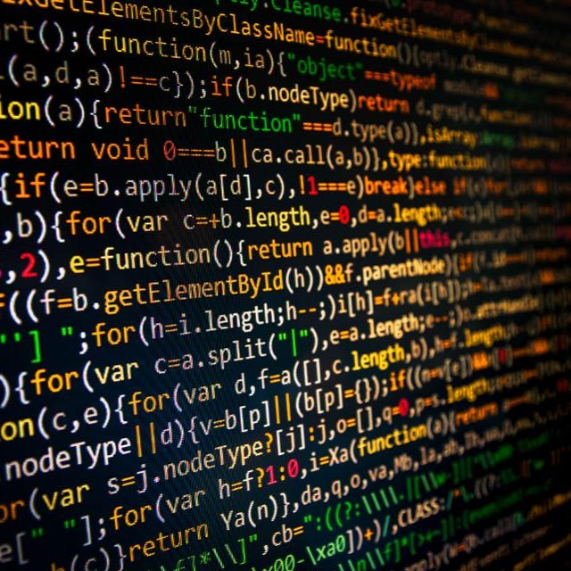

컴퓨터공학(-工學)은 정보화 사회에서 컴퓨터의 하드웨어와 소프트웨어 그리고 통신 및 네트워크를 연구하여, 컴퓨터 시스템과 컴퓨터와 관련된 여러 기술을 개발하여 익히고 이를 각 분야에 응용함을 목적으로 하는 학문 분과이다.
하드웨어 부분에서 전자기학(電磁氣學, electromagnetics) 이론 분야와 마이크로프로세서 분야, 전자회로 분야로 나뉘고, 소프트웨어 부분에서 소프트웨어공학(-工學, software engineering) 분야와 시스템분석 및 설계 분야와 프로그래밍 분야, 파일관리 및 데이터베이스(-, data base)와 같은 데이터 저장 분야 등으로 분류한다.
통신 및 네트워크 부분에서 유선 및 무선통신과 데이터통신 등으로 나누어 연구 학습을 하며, 최근에는 융합기술을 기반으로 각종 응용 분야에서 컴퓨터와 융합하여 시너지를 향상시키고 있다. 그 한 예로 컴퓨터 과학(科學, science)과 전자공학(電子工學, electronics)이 연계되는 학문으로, 로봇공학(-工學, robotics)이나 방송 및 콘텐츠와 융합한 게임시스템 등 하드웨어와 소프트웨어 지식과 콘텐츠 지식을 요구하고 있는 학문 분야이다. 기초분야에서는 전자기학(電磁氣學, electromagnetics/electromagnetism), 회로, 이산수학, 자료구조, 오토마타, 알고리즘 등 컴퓨터 기술을 발달시키기 위한 기반이 되는 논리학(論理學, logic)을 다루는 부분이다.
프로그래밍 분야는 컴퓨터 기술의 핵심을 이루는 분야로 C, C++, Java 등 여러 가지 프로그래밍 언어와 컴퓨터에게 명령하여 작동시키는 기술을 연구한다. 시스템 분야는 중앙처리장치(CPU)를 비롯한 입·출력장치 등의 컴퓨터의 하드웨어구조와 컴퓨터시스템을 구성하는 입력, 처리, 출력을 위한 커널과 운영체제, 시스템소프트웨어, 응용소프트웨어 개발 등에 대한 분석, 설계, 구현, 운영, 유지보수 및 품질관리, 프로젝트관리 등을 연구하는 학문 분야이다.